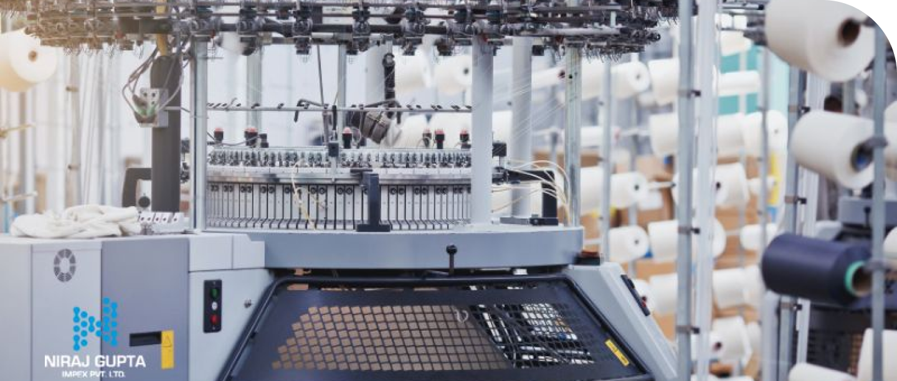

Exploring the Benefits of Indentors in Textile Product Manufacturing
September 18, 2023
There are many tools required in textile product manufacturing. One such specialized tool is the indenter. Indentors are also rollers used in different textile processes to create specific designs, patterns, or textures on the surface of textiles. By applying indentation or pressure to the fabric, these tools change the characteristics of the surface.
Benefits of Indentors in Textile Product Manufacturing
To enhance the visual appeal and tactile qualities of fabrics, indentors are essential to achieving the desired textile effects. They are used for processes like pattern creation, texturing, and embossing. Using them allows textile manufacturers to create customized, unique products.
Discussed below is detailed information on the benefits of indentors in textile product manufacturing:
1. Improved comfort
In the textile industry, indentors are tools used to create subtle impressions or patterns on fabrics. These indentations add depth, texture, and visual appeal to the material and enhance its tactile qualities. The precise design and application of indentors can significantly impact the comfort and experience of the final product.
For instance, indentations can be used to create soft, plush surfaces that are ideal for bedding and upholstery. They can also add subtle variations in texture to clothing, making it more interesting to touch. Additionally, indentors can create intricate patterns that add visual interest and sophistication to textiles.
2. Texture and design
Indentors are often used to create unique textures and intricate designs on textile surfaces. They are essential tools in the textile industry because they enable the creation of patterns, embossments, or textures. These creations can significantly elevate the visual and tactile attractiveness of fabrics.
Additionally, indentors have artistry and innovation that are pivotal in fashion-related industries. When used in fashion, intricate detailing can transform garments into high-end couture pieces. In upholstery, indentors can enhance the luxurious feel of furniture textiles and make them more appealing and comfortable.
1. Improved comfort
Indentors are essential tools in the textile industry. They contribute to the aesthetics and durability of textile products. In sectors such as upholstery and automotive textiles, using indentations and patterns by indentors helps extend the lifespan of fabrics. These engineered textures help prevent common issues like tearing and premature wear and tear.
In upholstery, where fabrics face constant use and friction, the indentations created by these tools can reinforce the fabric's structure. Similarly, in automotive textiles exposed to various stresses and strains, using indentors helps ensure longevity by reducing the risk of wear and tear. Thereby enhancing the overall quality and performance of these textiles.